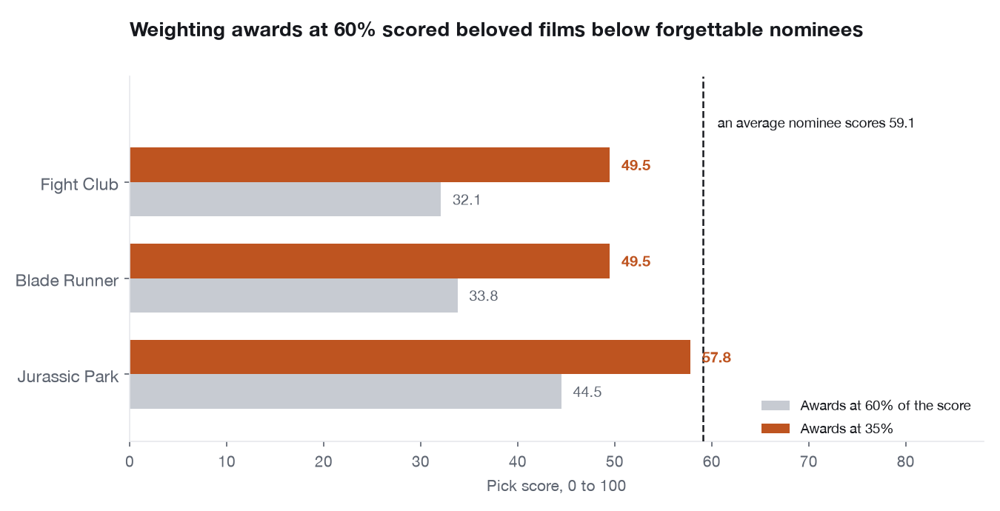
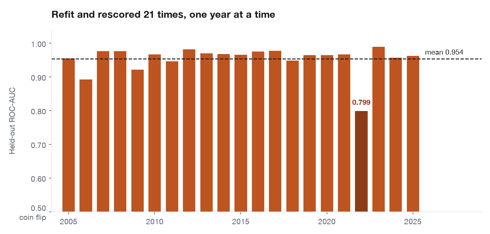
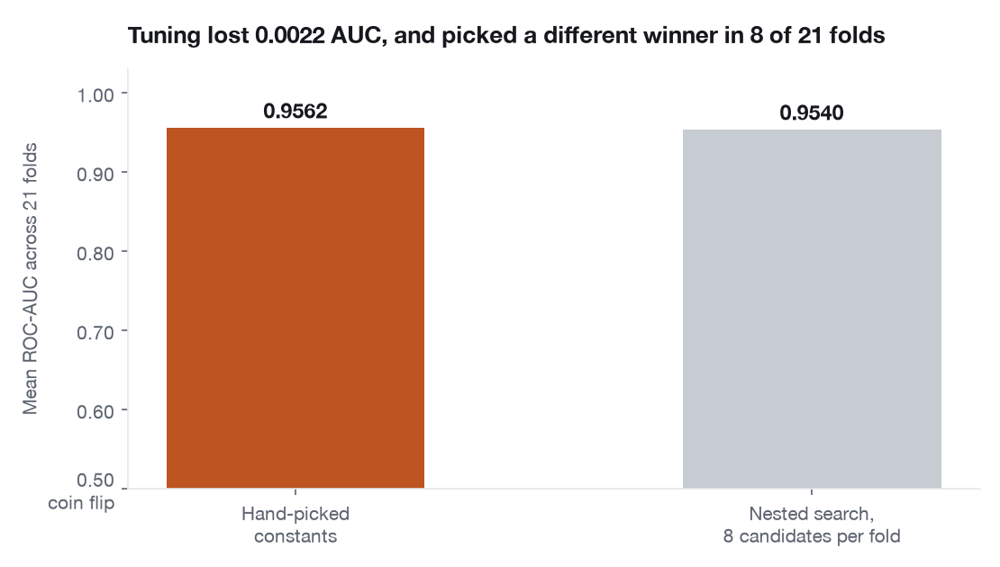
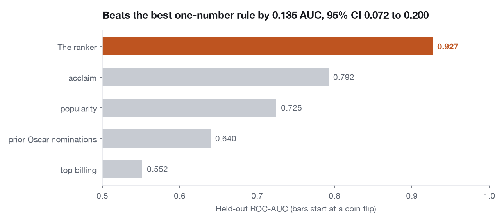

Projects/Clean Sweep
Clean Sweep
Three games on one dataset: 76 years of Academy records joined to IMDb ratings, votes, billing and the co-star graph. The scoring had to be argued down from awards to quality, because a metric that ranked Fight Club below the average nominee was measuring hardware, not films.
Three games on one dataset: 76 years of Academy records joined to IMDb ratings, vote counts, billing and the co-star graph. Six Degrees asks who connects two actors, The Oscars asks how good a ballot you can draft, and The Chain asks you to get from one film to another through shared casts. It is a real deployment rather than a demo: a static build on GitHub Pages talking to an API on Render, serving the whole catalogue, installable to a phone from the browser share menu.
Can a model tell a great film from a decorated one?
Only once the scoring stopped rewarding decoration. The first version weighted ceremony results at 60 percent, which scored Fight Club at 32 and Blade Runner at 34 against an average nominee of 59. Films people actually love were losing to films nobody remembers, because the metric was measuring hardware rather than quality. Demoting the awards freed the other four signals and the scores started matching what audiences and critics already believed.
A game is an unusually strict place to put a model. Every score is shown to someone who has an opinion about the film, so a ranking that is subtly wrong gets caught immediately by a player rather than surviving in a notebook. That is also what makes it a good place to demonstrate engineering: the model has to be right, and the thing around it has to stay up, load fast on a phone, and keep working when the API has gone to sleep.
Four decisions, each with the chart that settled it.




The load-bearing decision is that the game engine cannot touch the outside world, and a test enforces it rather than a comment asking nicely.
- Why a pure engine with no I/O at all?
- Nine modules under
app/engine/hold every rule of every game and are not allowed to import a database driver, a HTTP client or pandas. That makes the rules testable without fixtures, and it is why the deployed image is 77 MB rather than 530. - Why test the architecture instead of documenting it?
- A rule nobody checks is a comment.
test_architecture.pyparses the source withastand fails the build if an engine module imports anything it should not. The check was verified by injecting apandasimport and watching it break. - Why ship gzipped JSON Lines instead of Parquet?
- Measured, not assumed. Loading the seed columnar built 1.1 million objects at once and cost 84 MB of transient memory, which is what made the container fall over on the free tier. Streaming row-by-row from JSON Lines took peak usage from 402 MB to 365 MB and kept pandas off the request path entirely.
- Why keep a mode the client never shows?
- The API stays a complete description of what the system can do; the client decides what it presents. Recast is still served and still tested, and one list in the frontend is the only thing that hides it, so the two halves can disagree without either becoming a lie.
The quality score is a composite of five measurable signals, and it inherits their blind spots: films with thin vote counts sit where their sparse data puts them, and anything released before ratings sites existed is judged on records written long after the fact. The ranker is validated against whether a film won its category, which is a proxy for quality and not the thing itself. It is a game, and it is scored honestly, but the target was never truth.
Data: the Academy's own records via the oscar_data project, and IMDb's public datasets. Built for portfolio demonstration. The API sleeps when nobody is playing, so the first move of the day takes a few seconds while it wakes.